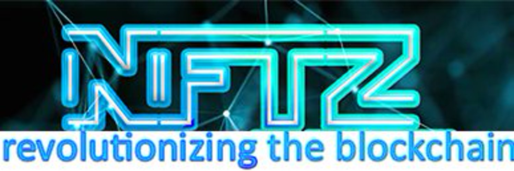

My profile |
Personal InformationName:Kias HenryStudent Number:s3564324Student Email:s3564324@student.rmit.edu.auI was born in Proserpine, near Airlie Beach up north, in an english speaking household but our family moved down to Brisbane when I was asround 3. A interesting fact about me is I have both been homeless for several years in the past, as well as the CEO of an web company. I did half of an IT degree @ Griffith University in Brisbane when I finished school, but left early to start a web company with a friend. What is your interest in IT? When did your interest in IT start?I started getting interested in computers after being given an Amiga 500 for mowing one of my mums friend's lawns a few times and it came with about 500 games on giant floppy discs. It was games originally that got me interested, but s I became a teenager I was most impressed with discussion boards, internet relay chat and the potential for the internet to connect me with like minded indiviuals all over the world. I became obsessed with computers around 13-13 years of age. Was there a particular event or person that sparked your interest? Outline your IT experience (if any).Yes! Interstate 76. I was obsessed with this game, and not only did I learn how to touch type while playing it online I also started learning about things like hex editors as I became interested in custom modifying vehicles in the game in a way the original game designers never allowed. There was a community of game fans that were releasing 'patches' and 'cracks' for the game, as well as tutorials on how to do this, so I guess these sites also exposed me to programming related tutorials, and became my stepping stone to a greater interest in IT and the internet. I have set up several large scale sites in the past; both personal and large scale, on my own, and with others but I do feel my skills could still undergo a huge upgrde!Why did you choose to come to RMIT?I live remote in Northern NSW and as such became interested in courses offered by Open University Australia as with lockdown, border closure between NSW and QLD (I was considering Goldcoast IT degree through Griffith) this seemed the most logical way to go forward. What do you expect to learn during your studies?I expect to learn all the skills necessary to get a good job in the IT industry. I expect not to necessarily be shown what the answers are, but being taught how to find them myself, like I will be required to when working professionally. I expect to be taught how to work better in group settings. I hope to be able to refine my time management skills as it is an online course for me, and I have to motivate myself to meet weekly objectives and goals. I expect to learn python and more about other web languages and technologies that will be relevant for professional work following the degree. Ideal JobSenior/Lead Developer (Blockchain)View Job here Job Advert SnapshotJob DescriptionThis is a job for a Senior/Lead developer to work for a cryptocurrency trading business. The business works with several large cryptocurrency exchanges to perform Peer to Peer trading. I feel a job like this would be ideal for me as I am fascinated by what blockchain makes possible online. This job would allow me to be involved with app development, website development and design, work with APIs, the Python programming language as well as the latest internet technologies. I have had an interest in cybersecurity since a teenager and because of the inherent risks with blockchains re cyber attacks/hacks I think it would be amazing to work in a position like this where I had to stay up to date with cyber security topics to ensure I could write efficient, safe code that wasn't easily exploited for my client. I find this job very attractive because they also state the successful applicant may get shares in the company, may be able to extend onto being manager of the whole IT department, and it also says the work can be remote. The position asks for an exceptional understanding of Python, knowledge of blockchain and cryptocurrencies, front end development tools such as Javascript, VueJS, React & Angular. The company is also saying someone with programming experience in C++, Java, Go, Node & Solidity is beneficial. Further they state knowledge of RDBMS or NoSQL databases is also beneficial. I have skills in web development, PHP, some Python (from this course already), database design however I am familiar with MYSQL and Phpmyadmin. I have no experience with VUEJS, React, Angular, RDBMS, or NoSQL. I have played around with a small Solidity file to make my own cryptocurrency coin on Binance Smart Chain using Remix. I have experience as a web designer, web admin and database admin for large scale commercial projects, as well as some private projects. My plan to be able to fulfil all the requirements for this role is to continue to learn as much as I can about blockchain technologies, Solidity, Javascript and cyber security. I will research all of the skills I do not currently have to better advance my understanding throughout this degree. I will continue to stay up to date with the latest web technologies, and also hone my skills on programming automated systems. Personal ProfileResults of Myer-Briggs Test: The ENFP is quirky, curious, creative, and idealistic. As one of the most open-minded personality types, ENFPs bring an experimental and explorative attitude to their life and work. Enticed by new ideas, cultures, and possibilities, ENFPs enjoy traveling and are reluctant to stay in one place too long. Results of Personality Max Learning Styles Test:View my resultsPrimary Learning Style: Primarily Visual, Then Auditory, then Kinesthetic Characteristics of my learning style:
Results of Big5 Personality Test:View my resultsDiscussion of results: As expected I didn't feel these tests would be able to gauge me very well. I found straight away while selecting a response in either direction that the questions were too simple and I often found my answer was paradoxical, which the tests did not cater for. The category I think I fall into is: "If your position doesn't contradict itself, it isn't complex enough". Take for example how the Myer-briggs test says I am very extroverted, but the Big5 test says I am an introvert. Likewise the PersonalityMax test said I am one of the most open minded types of learners, while the Big5 test says I score lowly on 'openness to new experience'. I always find with these tests they are categorizing me in a way that isn't me, from the first questions that try to box me in. Sometimes I'm very extroverted and comfortable in big groups, and at other times I want to hide in a box from the world. I have often felt a little on the spectrum, mainly because of my abilities with computers since young, but also feel very extroverted in some respects, eg I go out busking on a drum regularly. That being said I find it much less confronting if I drink alcohol before and during the performance, so I'm probably more introverted in many ways. I don't feel these tests were accurate for me for the most part, but I do think they outlined that I am more a visual learner in general. Overview My idea is a marketplace for environmental based fractional NFTs. Like other nft marketplaces, but solely for projects that fundraise for environmental solutions. There will be a governance token for the marketplace which is a deflationary crypto currency pegged to real-world environmental variables. In a nutshell users from all around the world could fractionally purchase land as an NFT, for the purposes of conservation/reforestation. There would be many other use cases for these enviro-NFTs other than real estate. Motivation Climate change is having devastating effects world wide, so having a marketplace that helps facilitate environmental projects using the latest blocking technology, by disupting conventional markets that are usually hard to get into, can help with landcare projects. Ever since finding out in the Northern Rivers area 99.6% of one of the worlds oldest rainforests has been cleared, I have felt it very important to be involved with growing native trees for the purpose of reforestation. DescriptionThe NFTree Marketplace will be a website where anybody can start investing directly in conservation and other enviro-projects around the world. The marketplace will sell fractionalized NFTs of tropical rainforest, allowing anybody in the world to contribute even tiny amounts of capital. The marketplace will be governed by a token called NFTz. This token will be linked quarterly (through burning) to increasing carbon levels in the atmosphere, and the amount of tokens to begin with will be the number of remaining hectares of tropical rainforest worldwide. The regular burning of NFTz tokens will make it deflationary, and early investors who put their money on the line will be heavily rewarded for investing in enviro-projects now. The marketplace will be a world first, as usually NFTz are for art mainly, but there have been cases where couples have minted 3d printed wedding rings, and a sports club has put 1% of its ownership up for grabs for investors. Houses have also been purchased with cryptocurrency, and an NFT is a store of value, essentially a currency as well. As has been seen with sites like decentraland, purchasing virtual land has become increasingly popular. Where NFTree as a marketplace shines, is it uses all the same technology but for real world assets. Just as Decentraland has the Mana token, NFTree will have the NFTz token. NFTree will be the 1st marketplace of its kind, and the governance token NFTz will be the first token linked not only to carbon, but also remaining forest in the world, making this project extremely cutting edge as an idea to help save the planet.The plan is that once one block of land is purchased as an NFT (meaning all fractions have been paid for), a team will then use that block to collect native seeds ongoing. Their job will also be able to take regular measurements of canopy thickness, tree numbers and so on to allow that purchased block to now become an offset for carbon for businesses who choose to sign up. This means each fractional NFT holder will receive the equivilent of dividends, as well as the price of their share increasing over time due to decreasing levels of rainforest world-wide giving more value into the future to said blocks. Then a blank block of land nearby that has been cleared in the past for pasture, or other activitiess, that is degraded, will be reforested using seeds from the previous nearby block. In this way, a cascading effect of conservation and reforestation will be established. In the beginning the marketplace will be centralised, with the sole mission of conserving and restoring habitat, but in time, it will phase into being decentralised and solely governed online by internet users. The only issue with this I can forsee is projects of a shady nature somehow getting through, but checks and processes can be put in place to prevent this from happening. This idea was originally spawned from turning a box of tree seedlings (containing about 1000) into an NFT, and this might still be possible through the marketplace, and then as the trees are grown, the value of the NFT increases, and after 3-5 years those trees would be planted somewhere in agreement with a landholder. Both the landholder and original investor of the tree seedling box would then be able to receive dividends from companies to offset a specific amount of carbon each year, based on how many trees they sponsor. The marketplace would also have other projects, such as beach cleanup projects, river clean ups, rubbish cleanups in the bush, and potentially even projects relating to making clean drinking water available in areas, and other benefits for communities. The marketplace could also be used as a kind of kickstarter for inventive solutions to climate change, such as water from air inventions, research into cleaner/sustainable products and more. This project faces many challenges, namely, concerning laws of privatisation of assets in the real world put onto the blockchain. I will need to research what is possible in this regard with relevant authorities, as well as the laws pertaining to carbon offsetting and how this could be integrated. I forsee a small team of developers initially but due to the potential for fighting climate change problems this project affords, I imagine this site could grow into a large team of developers, environmental activists, lawyers, business consultants, nursery workers, seed collectors, marketing teams, philanthropists, and many more. The beauty of developing a custom deflationary coin is that every time a transaction occurs, a % can be put aside and stored in a unique wallet. This wallet can be locked for a set time like 2-5 years. In this way, the promise of funds at a later date for investors & contributors is also possible, as would be staking the NFTs themselves, and the governance token. The marketplace and the coin would be designed in a way to maximise rewards to all involved, bonuses, and incentives to get people to support conservation. The marketplace would be a benefit to the forests and all of the animals therein, as well as communities faced with sea level rise. The site would become more and more involved in projects not only relating directly to reforestation but the problems associated with extensive tree clearing and rising carbon levels. I also think on the issue of ownership, indigenous land owners of that region would need to be consulted, and rewarded as part of the ongoing processes that unfold as the project grows. Some of the carbon offsetting from conserved blocks will be used to offset any computational work needed in the running of the marketplace and all transactions related, making the entire project not only carbon neutral, but as time goes on, more and more carbon negative. Tools and TechnologiesThe marketplace and NFTs themselves will be based on the MINA blockchain, which is called 'The worlds lightest blockchain' which should always remain at around 22kb, unlike most which are 300GB+ and growing. This means less computational power is needed, hence better for the environment. The cryptocurrency will also be a Mina based token. The cryptocurrency will be written in Solidity using the remix ide. The marketplace itself will be written using cookies, html, css, javascript, ajax, jquery, php, mysql and phpmyadmin. Skills RequiredExpert level website development will be needed to make the marketplace, proficiency in web building technologies, also will need in depth knowledge of blockchain development and associated security issues. An understanding of the real estate market, as well as technical know how to do with fractionalizing NFTs. Will need good communication skills to market the idea to potential investors/philanthropists, as well as stating clearly on the site how it all works. Outcome - The outcome will be a kind of amazon for land and enviro conservation projects. People from anywhere in the world will be able to invest even tiny amounts of cryptocurrency into conservation and land purchasing projects for reforestation, and will earn rewards in cryptocurrency for their % of NFT ownership in said projects. I forsee after the first major land sale, many people around the world putting their blocks on the site to fractionalize ownership using the blockchain, and also companies offsetting their carbon by purchasing tokens. The outcome will be environmentally friendly NFTs, something that is a big problem at the moment with many increasing developments in blockchain tech. |